The aim of this section is to find the analytical form of the function, which Fourier coefficients satisfy system (5). For arbitrary
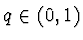
let us define the following sequence: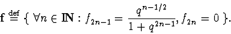
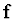
are proportional to Fourier coefficients of the Jacobi elliptic function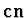
[2]: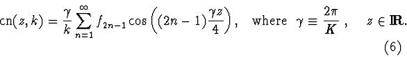
Let us clarify introduced notations and point out some properties of the elliptic cosine:
1) Basic periods of the doubly periodic function
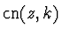
are 4K(k) and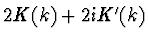
, where K(k) is a full elliptic integral,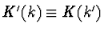
and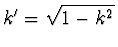
.2) The parameter q in the Fourier expansion can be expressed in terms of elliptic integrals:
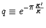
.3) The Fourier-series expansion of the function does not include even harmonics. This expansion is valid in the following domain of the complex plane:
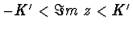
, in particular, for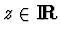
.4) If and
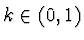
, then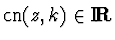
.
5) The function
is a solution of the following
differential equation:
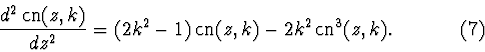
The latest property means that the infinite sequence of the Fourier coefficients for is a solution of some infinite system of nonlinear algebraic equations. Let us find this system.
On the one hand, it is clear from (6) that the Fourier-series expansion for the function
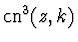
is: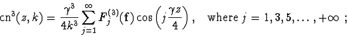
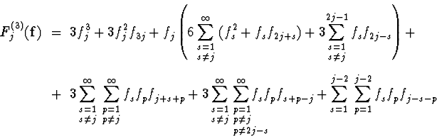
On the other hand, from the differential equation (7) it follows that
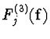
is proportional to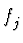
, with coefficients of proportionality depending on j: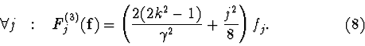
Thus, the sequence is a nonzero solution of system (8) at all . The following lemma proves the existence of a preferred value of q.

| Lemma. | There exists such value of parameter
that the sequence
is a real solution of
system (5), in addition a value of
|
|---|---|
| Proof. | Inserting the
sequence
into system (5) :
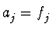 and using system (8), we obtain: |
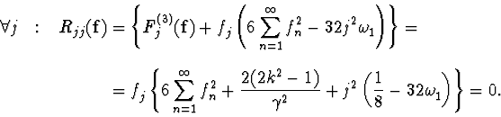
System (5) has a nonzero solution if and only if
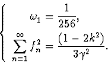
We have obtained the value of
 .
The second
equation of this system is equivalent to the following equation in
parameter q:
.
The second
equation of this system is equivalent to the following equation in
parameter q:
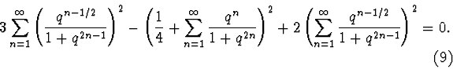
This equation has the following solution on interval (0,1):
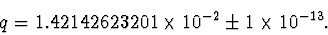
Thus the lemma is proved.
Now it is easy to construct the required zero approximation for the
function
 :
:
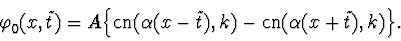
For arbitrary this function is a real solution of equation (4). If
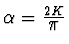
, then the periods of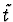
are equal to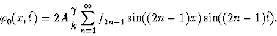
If
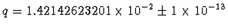
, then q is a solution of equation (9) and the sequence is a real solution of system (5). The middle value of q corresponds to k=0.451075598811,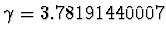
and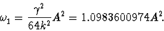
Thus we have proved that the function
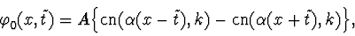